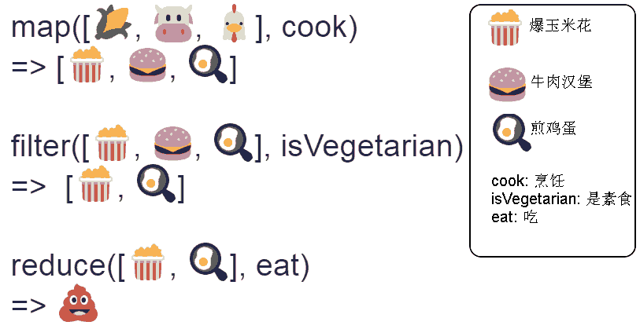

map、reduce 和 filter 是函数式编程中用到频率非常高的三个函数，对类Array 类型操作非常方便，被称为 FP 中的三板斧。还有几个相关的稍微复杂的函数也一并介绍： chain（flattenMap）、transduce、into、reduced。
图解 map/reduce/filter
虽然这是 Underscore 方式的写法，但不影响对三个概念的理解.

源码分析
- map
123456789101112131415module.exports = _curry2(_dispatchable('map', _xmap, function map(fn, functor) { switch (Object.prototype.toString.call(functor)) { case '[object Function]': return curryN(functor.length, function() { return fn.call(this, functor.apply(this, arguments)); }); case '[object Object]': return _reduce(function(acc, key) { acc[key] = fn(functor[key]); return acc; }, {}, keys(functor)); default: return _map(fn, functor); }}));